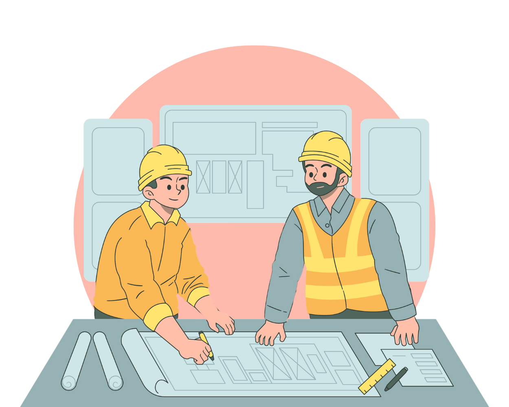
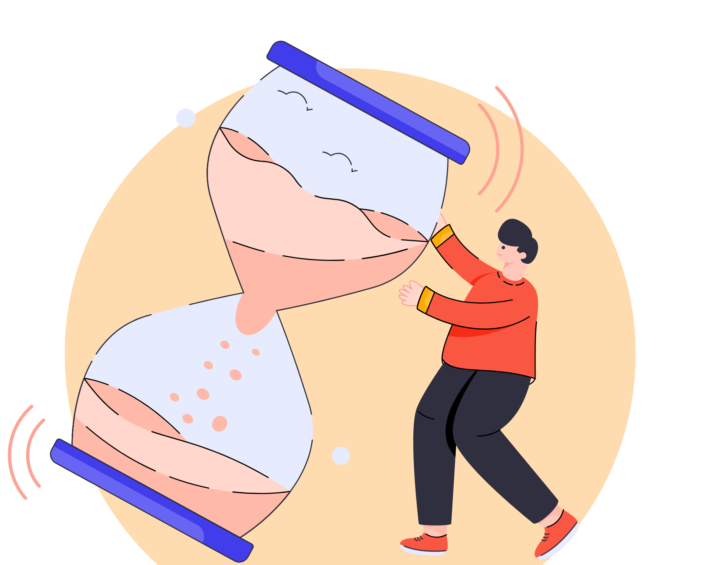

Samordning och undantag för små projekt
Rollen BAS-P har förtydligats, särskilt när det gäller samordning och uppföljning
av projektörer under planeringen och projekteringen. För de allra minsta byggprojekten
finns vissa undantag, där en projektör som både är BAS-P och BAS-U kan undantas från
vissa paragrafer. Grundtanken är att ingen ska behöva följa upp sitt eget arbete.

Handläggare inom BAS-P
För juridiska personer ska en namngiven handläggare utses som ansvarig för BAS-P.
Denna person måste ha den nödvändiga kunskapen och kompetensen för att utföra arbetsmiljöarbetet
effektivt.
Kännedom om Kapitel 9
Det är också viktigt att BAS-P har god kännedom om Kapitel 9, som behandlar projektörernas
och byggherrens ansvar.

Samordning och arbetsmiljöarbete
BAS-P måste ha rutiner för hur samordning och arbetsmiljöarbete ska organiseras och
informera projektörerna om detta.
Särskild kompetens
BAS-P ska se till att det finns en person med särskild kompetens för projektering av
tillfälliga eller samverkande konstruktioner, oavsett om det gäller uppförande, användning
eller demontering av konstruktionen.

Uppföljning av projektörer
BAS-P ska följa upp att projektörerna arbetar med att förebygga arbetsmiljörisker och
återkoppla till byggherren om allvarliga risker eller om projektörerna inte följer anvisningarna.
Arbetsmiljöplanen (AMP)
BAS-P ska påbörja arbetsmiljöplanen (AMP) så snart rollen har tilldelats och kunna visa upp risker
och åtgärder i ett tidigt skede. Överlämningen av AMP ska ske på ett strukturerat sätt, helst genom ett
möte där alla berörda parter, inklusive byggherren, deltar. Det är viktigt att AMP skickas ut i god tid
och att överlämningen inte bara sker via e-post.

Fortsatt samordning
Om projekteringen fortsätter, är det BAS-P
ansvar att fortsätta samordna arbetsmiljöarbetet.